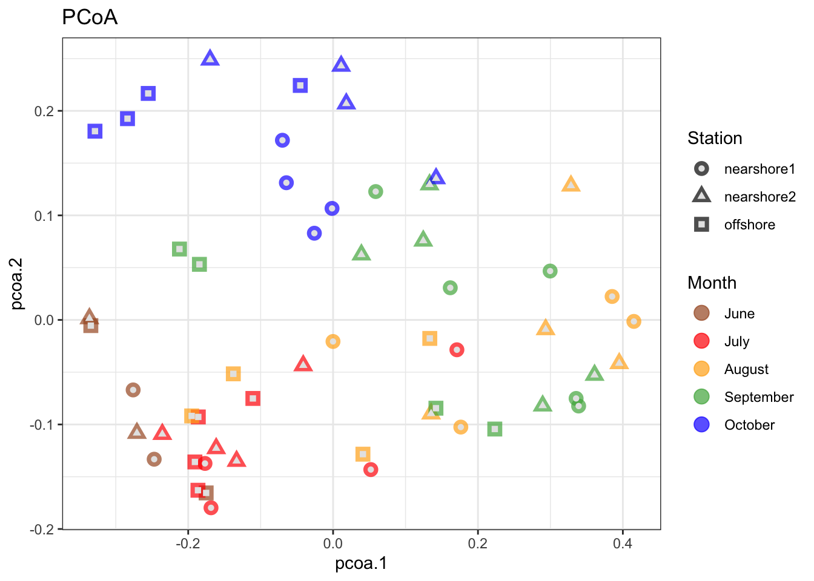
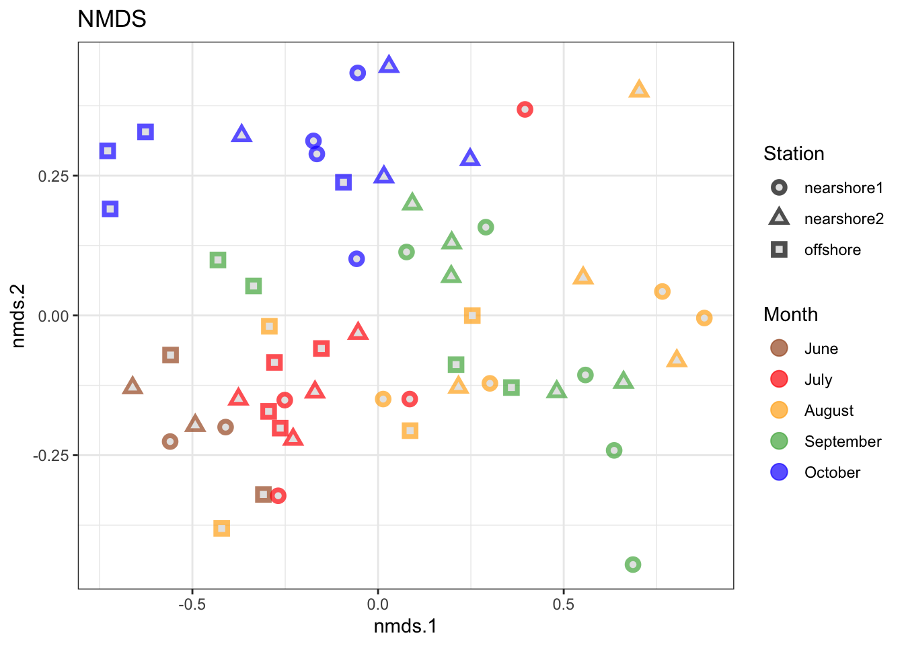

rm(list = ls())
gc()
library(dplyr)
library(tidyr)
library(ggplot2)
library(purrr)
library(vegan)
library(ape)
erie <- readRDS("erie_data/erie.rds")
erie_meta <- readRDS("erie_data/erie_meta.rds")
erie_tax <- readRDS("erie_data/erie_tax.rds")Lake Erie Watershed Analysis
code
analysis
visualization
Back in the fall of 2020, I register for a program at Hope College called Day1: Watershed, a year-long program that offered the opportunity to engage in the efforts of Hope’s local community to improve the water quality of the greater Holland area and larger Lake Michigan ecological systems. While I originally took it because I was interested in scientific research, that program catalyzed my love of Data Analytics.
As the research is ongoing and owned by Hope College, I cannot provide the work that I did back then. However, here is a taste of the analyses we conducted using the Lake Erie dataset provided by Michelle Barry.
Lake Erie: Unconstrained Ordination
Multivariable data is often hard to work with. In order to understand relationships in the data we need to summarize the variability in a way that reduces the dimensionality of the data. Historical there are several different ordination methods that have been applied to ecological data. For this project we are using unconstrained ordination. We start with an abundance matrix with samples along one dimension (rows) and species (or other taxonomic classification) along the the other (columns). Two samples are similar if they have similar species compositions. That information is then used by the unconstrained ordination to order samples along the ordination axes. We will use two unconstrained ordination methods for this analysis: Principal Coordinate Analysis (PCoA) and Non-metric Multidimensional Scaling (NMDS).
Setup and Importing
Remove Small Samples
erie_meta <- erie_meta |> filter(sequencingDepth >= 10000)
erie_samples <- erie_meta |> pluck("SampleID")
erie <- erie |> filter(SampleID |> is.element(erie_samples))Compute and Remove Low Relative Abundances
# Pivot the data and group by SampleID
erie <- erie |>
pivot_longer(cols = starts_with("Otu"),
names_to = "OTU",
values_to = "Abundance") |>
group_by(SampleID)
# Calculate the relative abundances and filter out all rows with a relative abundance less than or equal to 0.005%
erie <- erie |>
mutate(Rel_Abundance = Abundance / sum(Abundance)) |>
filter(Rel_Abundance > 5e-5)
# Ensure that we drop any OTUs in the taxonomy table which are no longer present in the erie table
erie_tax <- erie_tax |> semi_join(erie, by = "OTU")
# Repivot the data back to original wide format
erie <- erie |>
ungroup() |>
select(-c(Abundance)) |>
pivot_wider(names_from = "OTU",
values_from = "Rel_Abundance",
values_fill = 0)The Community Matrix
erie_rownames <- erie |> pluck("SampleID")
erie_matrix <- erie |>
select(starts_with("OTU")) |>
as.matrix() |>
`rownames<-`(erie_rownames)The PCoA Calculation
# Calculate distances with the bray method
erie_dist <- erie_matrix |> vegdist(method = "bray")
# Perform the PCoA
erie_pcoa <- erie_dist |> pcoa()
# Convert from matrix to tibble
erie_pcoa_tib <- erie_pcoa %>%
pluck("vectors") %>%
.[,1:2] %>%
as_tibble(rownames = "SampleID") %>%
rename(pcoa.1 = Axis.1,
pcoa.2 = Axis.2)
# Join the PCoA tibble to the meta data
erie_meta <- left_join(erie_meta, erie_pcoa_tib)The NMDS Calculation
# Seed the number generator for consistency and reuse the matrix from earlier for the calculation
set.seed(02052001)
erie_nmds <- erie_dist |>
metaMDS(trymax = 200, sfgrmin = 1e-9, sratmax = 0.999999999)
# Convert from matrix to tibble
erie_nmds_tib <- erie_nmds |>
pluck("points") |>
as_tibble(rownames = "SampleID") |>
rename(nmds.1 = MDS1,
nmds.2 = MDS2)
# Join the NMDS tibble to the meta data
erie_meta <- left_join(erie_meta, erie_nmds_tib)Plotting the Data
# Ensure months are ordered correctly for the plot using factors
erie_meta <- erie_meta |>
mutate(Month = factor(
Month,
levels = c("June", "July", "August", "September", "October")))
# Create the PCoA plot
ggplot(data = erie_meta,
mapping = aes(x = pcoa.1, y = pcoa.2, color = Month, shape = Station)) +
scale_color_manual(values = c("#a65628", "red", "#ffae19", "#4daf4a",
"#1919ff", "darkorchid3", "magenta")) +
geom_point(aes(color = Month), alpha = 0.7, size = 4) +
geom_point(colour = "grey90", size = 1.5) +
theme_bw() +
labs(title = "PCoA")
# Create the NMDS plot
ggplot(data = erie_meta,
mapping = aes(x = nmds.1, y = nmds.2, color = Month, shape = Station)) +
scale_color_manual(values = c("#a65628", "red", "#ffae19", "#4daf4a",
"#1919ff", "darkorchid3", "magenta")) +
geom_point(aes(color = Month), alpha = 0.7, size = 4) +
geom_point(colour = "grey90", size = 1.5) +
theme_bw() +
labs(title = "NMDS")

What do the PCoA and NMDS plots tell us?
PCoA
The PCoA plot shows a low species variation across stations for the June and July months, while the other months are more spread out and diverse. September and August appear to overlap the most in species abundances, while October’s abundances are the most separate from the other months. Which station as sample was taken at seems to have a much smaller affect on species similarity than the month. For October, the stations show the most separation from each other.
NMDS
The NMDS plot shows a similar picture to the PCoA, though the June and July samples are more densely concentrated with the exception of one July outlier. Why the July nearshore1 sample is so far removed from the other July samples is worth investigating. Again, August and September show the most species similarities, while October has the least overlap with other months.
Findings
The plots suggest there is little change in species composition in the June and July months, but throughout August and September we see a greater variation in species abundances and similarities. October shows the least species similarity with the other months, likely due to changing seasons and colder weather affecting the composition of bacteria in the water.